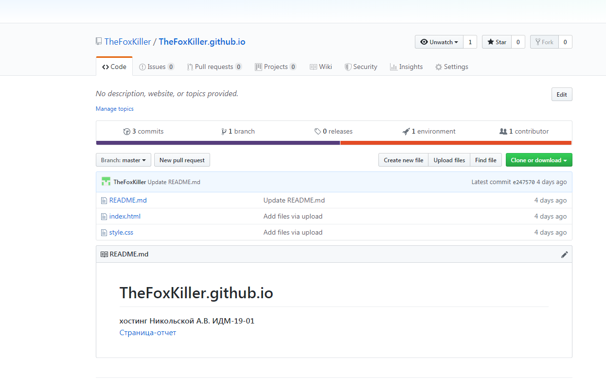
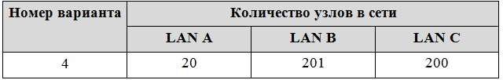
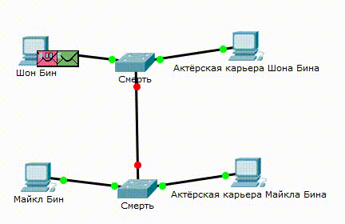
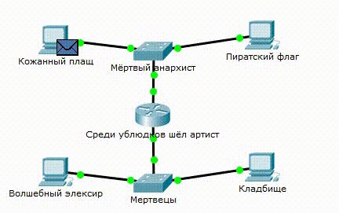
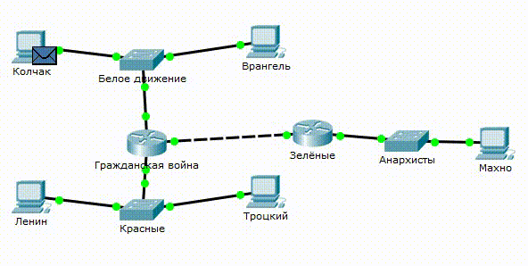

Лабораторная работа №1
Задание: работа с git, создание персональной страницы-отчёта

Были использованы: язык разметки HTML, язык таблицы стилей css.
Хостинг был создан на GitHub.
Мой профиль на GitHubПерсональная страница-отчёт
Лабораторная работа №2
-
Состав команды:
- Задачи:
- 1. Выбрать тему проекта
- 2. Выбрать технологии для реализации
- 3. Разработать интерфейс веб-приложения
- 4. Разработать серверную часть веб-приложения
- 5. Создать презентацию готового веб-приложения
- Решения:
- 1. В качестве темы был выбран сайт для игры в шахматы
- 2. В качестве технологий были выбраны C# для серверной часть и JS для клиентской
- 3. Был разработан концептуальный интерфейс приложения (представлен в презентации)
- 4. Был реализован основной функционал веб-приложения
- 5. Была создана презентация: страница-презентация
1. Коленкин Василий страница-отчёт
2. Никольская Александра страница-отчёт
3. Коробов Сергей страница-отчёт
4. Куликов Роман страница-отчёт
5. Дедков Игорь страница-отчёт
Лабораторная работа №3
- Задачи:
- 1. Выполнить задание в системе Cisco Packet Tracer
- 2. Оформить отчёт на своей страничке
- Решения:
- 1. Был выбран вариант 4:
- 2. Создана сеть из двух компьютеров и коммутатора (Добавлена LAN A - subnet:10.1.255.0, mask:255.255.255.224):

- 3.1. Создана сеть из четырёх компьютеров и двух коммутаторов (Добавлена LAN B - subnet:10.1.254.0, mask:255.255.255.0) :
- 3.2. Данная сеть не работает, т.к. для объединения разных сетей нужен маршрутизатор
- 4. Создана сеть из четырёх компьютеров, двух коммутаторов и маршрутизатора:
- 5. К существующей сети подключена дополнительная, включающая в себя коммутатор и компьютер (Добавлена LAN C - subnet:10.1.253.0, mask:255.255.255.0) :
 - 2. Создана сеть из двух компьютеров и коммутатора (Добавлена LAN A - subnet:10.1.255.0, mask:255.255.255.224):
Подготовка к экзамену
Задание: